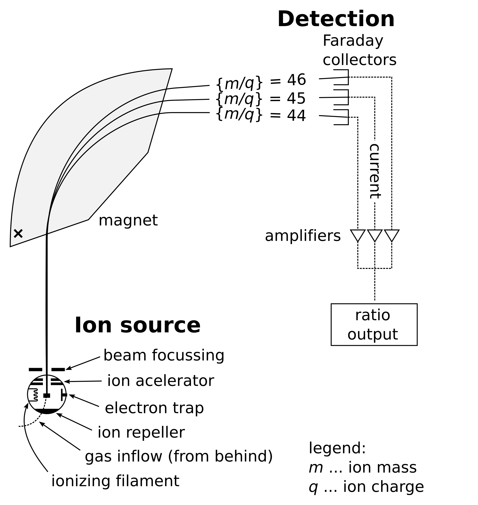
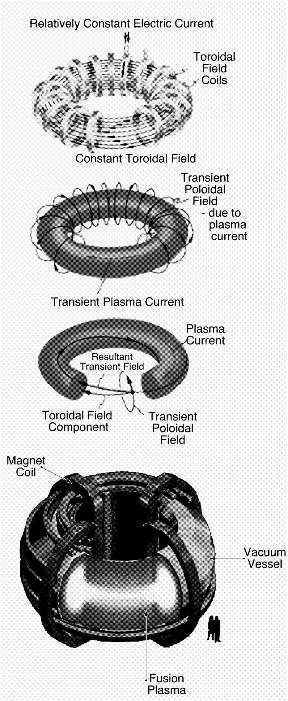

Problem 1
Simulating the Effects of the Lorentz Force
Motivation
The Lorentz force, mathematically defined as:
governs the motion of charged particles in the presence of electric fields (\( \vec{E} \)) and magnetic fields (\( \vec{B} \)). This fundamental equation encapsulates the combined influence of electric and magnetic forces acting on a particle with charge \( q \) and velocity \( \vec{v} \). The electric field component (\( q\vec{E} \)) exerts a force aligned with \( \vec{E} \), while the magnetic field component (\( q\vec{v} \times \vec{B} \)) introduces a force perpendicular to both the particle’s velocity and the magnetic field, often resulting in complex, curved trajectories. This interplay is essential to understanding and predicting the behavior of charged particles across a wide range of physical systems.
The Lorentz force is a cornerstone in numerous scientific and technological domains, driving advancements and discoveries in:
- Plasma Physics: It dictates the motion of ions and electrons in ionized gases, enabling the study of phenomena like fusion processes in stars or laboratory plasma confinement for energy research.
- Astrophysics: It underpins the dynamics of charged particles in cosmic environments, such as the deflection of solar wind particles by Earth’s magnetic field, the behavior of particles in planetary magnetospheres, or the propagation of cosmic rays through the interstellar medium.
- Mass Spectrometry: It facilitates the separation and identification of ions based on their mass-to-charge ratios, a technique critical for chemical analysis and material characterization.
- Particle Accelerators: It powers devices like cyclotrons, synchrotrons, and linear accelerators, where precise control of electric and magnetic fields accelerates particles to relativistic speeds for experiments in particle physics and medical applications like cancer therapy.
Through computational simulations, we can observe and analyze the rich variety of trajectories and interactions that arise from the Lorentz force under different field configurations and initial conditions. By varying parameters—such as the strength and orientation of \( \vec{E} \) and \( \vec{B} \), or the particle’s initial position, velocity, and charge—simulations reveal behaviors ranging from simple linear motion to intricate helical paths or chaotic orbits. These virtual experiments provide insights into phenomena that are difficult or impractical to study directly, such as the motion of charged particles in the Van Allen radiation belts, the acceleration of particles in solar flares, or the design of next-generation accelerators. Moreover, simulations allow us to test theoretical predictions, optimize engineering designs, and explore hypothetical scenarios, bridging the gap between abstract theory and tangible applications.
Objectives
Applications of the Lorentz Force
The Lorentz force, with its ability to govern the motion of charged particles through electric and magnetic fields, finds practical utility across a diverse array of scientific and technological applications. Below, we explore how this fundamental principle is harnessed in various contexts, from precision instruments to cosmic phenomena, driving innovation and deepening our understanding of the universe.
- Mass Spectrometers: Mass spectrometers leverage the Lorentz force to separate ions based on their mass-to-charge ratio (\( m/q \)), a critical process in analytical chemistry and material science. When ions are injected into a mass spectrometer, they encounter a combination of electric and magnetic fields. The electric field accelerates the ions, while the magnetic field, applied perpendicular to their velocity, induces a curved trajectory via the \( q\vec{v} \times \vec{B} \) term. The radius of this curvature depends on the ion’s mass, charge, and velocity, allowing precise differentiation—lighter ions curve more sharply than heavier ones with the same charge. This technique is indispensable for identifying molecular compositions, detecting isotopes (e.g., carbon-12 vs. carbon-13), and analyzing complex samples, such as proteins in biological research or pollutants in environmental studies.
The figure below illustrates the schematics of a simple mass spectrometer equipped with a sector-type mass analyzer, specifically designed for measuring carbon dioxide isotope ratios (Isotope Ratio Mass Spectrometry, or IRMS), such as in the carbon-13 urea breath test. This setup harnesses the Lorentz force to separate ions based on their mass-to-charge ratio (\( m/q \)). Ions, generated from a sample (e.g., CO₂ gas), are accelerated by an electric field (\( \vec{E} \)) and then directed into a magnetic field (\( \vec{B} \)) region. The magnetic field, oriented perpendicular to the ions’ velocity, induces curved trajectories via the Lorentz force component \( q\vec{v} \times \vec{B} \). Lighter ions (e.g., \(^{12}\text{C}^{16}\text{O}_2\)) follow tighter curves, while heavier ions (e.g., \(^{13}\text{C}^{16}\text{O}_2\)) trace wider paths, enabling precise detection of isotopic compositions. In the carbon-13 urea breath test, this differentiation helps diagnose conditions like Helicobacter pylori infection by analyzing exhaled CO₂ isotope ratios.

-
Cyclotrons and Synchrotrons: In particle accelerators like cyclotrons and synchrotrons, the Lorentz force is the engine behind accelerating charged particles to extraordinarily high speeds. Cyclotrons use a constant magnetic field to confine particles (e.g., protons or electrons) in a spiral path, while an oscillating electric field, timed to match the particle’s increasing orbit, provides periodic boosts in energy. The magnetic component (\( q\vec{v} \times \vec{B} \)) ensures circular motion, with the radius growing as the particle gains speed. Synchrotrons, an advanced evolution, adjust both the magnetic field strength and electric field frequency dynamically to keep particles in a fixed-radius orbit as they approach relativistic speeds. These accelerators are vital for high-energy physics experiments (e.g., probing subatomic particles at CERN) and medical applications, such as producing beams for radiation therapy to target tumors with precision.
-
Plasma Confinement: Plasma confinement in fusion reactors relies heavily on the manipulation of magnetic fields through the Lorentz force to control the behavior of charged particles in a hot, ionized gas. In devices like tokamaks and stellarators, strong magnetic fields are engineered to trap and stabilize plasma—composed of ions and electrons—at temperatures exceeding millions of degrees, where nuclear fusion can occur. The Lorentz force’s magnetic component confines the particles in helical paths around magnetic field lines, preventing them from colliding with reactor walls and losing energy. This containment is crucial for sustaining fusion reactions, which aim to replicate the Sun’s energy production process, offering a potential pathway to clean, virtually limitless energy. Challenges like plasma instabilities and turbulence further highlight the Lorentz force’s role in ongoing research to achieve practical fusion power.
The figure below are components of the tokamak confinement configuration, one of the more advanced plasma confinement concepts. It uses a strong toroidal field created by external field coils (top) to stabilize the plasma while using a poloidal field created by a toroidal plasma current to confine the particles. The final configuration includes a large vacuum vessel to isolate the hot plasma from the surrounding environment (bottom). Courtesy of General Atomics and PPPL.

- Charged Particle Beams in Astrophysical Jets: In the vastness of space, the Lorentz force shapes the dynamics of charged particle beams within astrophysical jets—colossal streams of plasma ejected from objects like black holes, neutron stars, and active galactic nuclei. These jets, extending thousands of light-years, are propelled and collimated by cosmic magnetic fields interacting with charged particles (e.g., electrons and protons). The \( q\vec{v} \times \vec{B} \) term causes particles to spiral around magnetic field lines, focusing the jet into a narrow, high-energy beam that emits intense radiation, observable as radio waves, X-rays, or gamma rays. This process not only reveals the magnetic structure of cosmic environments but also influences star formation and galaxy evolution by redistributing energy and matter. Studying these jets through the lens of the Lorentz force enhances our understanding of extreme astrophysical phenomena and the fundamental forces at play across the universe.
These applications demonstrate the Lorentz force’s versatility, bridging laboratory-scale technologies with cosmic-scale processes. By manipulating electric and magnetic fields, we can harness this force to solve practical problems, advance scientific frontiers, and explore the mysteries of nature at every scale.
Simulating Particle Motion
Simulating the motion of a charged particle under the influence of the Lorentz force provides a powerful method to study its dynamic behavior in various electromagnetic environments. By numerically solving the equation of motion, \( \vec{F} = q(\vec{E} + \vec{v} \times \vec{B}) \), alongside Newton’s second law (\( \vec{F} = m\vec{a} \)), we can track a particle’s trajectory over time with high precision. These simulations allow us to explore theoretical predictions, replicate real-world phenomena, and test conditions that are challenging to achieve experimentally. We focus on three distinct field configurations to capture a range of physical scenarios:
-
A Uniform Magnetic Field: In this case, only a constant magnetic field (\( \vec{B} \)) acts on the particle, with no electric field (\( \vec{E} = 0 \)). The Lorentz force reduces to \( \vec{F} = q\vec{v} \times \vec{B} \), producing a force perpendicular to both the particle’s velocity and the magnetic field. This results in circular or helical motion, depending on the initial velocity’s alignment with \( \vec{B} \). Such simulations are crucial for understanding phenomena like the motion of electrons in a magnetic bottle or ions in Earth’s magnetosphere, where magnetic fields dominate.
-
Uniform Electric and Magnetic Fields: Here, both a constant electric field (\( \vec{E} \)) and a constant magnetic field (\( \vec{B} \)) influence the particle simultaneously. The electric component (\( q\vec{E} \)) imparts a linear acceleration along the field direction, while the magnetic component (\( q\vec{v} \times \vec{B} \)) induces rotational motion. The combined effect often yields complex trajectories, such as helical paths with a constant drift or parabolic curves, depending on field orientations and strengths. This setup mirrors applications like ion optics in mass spectrometry or particle behavior in laboratory plasma devices.
-
Crossed Electric and Magnetic Fields: In this configuration, \( \vec{E} \) and \( \vec{B} \) are perpendicular to each other (e.g., \( \vec{E} \) along the x-axis and \( \vec{B} \) along the z-axis). This produces a unique motion known as \( \vec{E} \times \vec{B} \) drift, where the particle moves perpendicular to both fields with a drift velocity \( v_d = E/B \). When the initial velocity is appropriately tuned, particles can also exhibit cycloidal or trochoidal paths. This scenario is key to understanding devices like magnetrons, Hall-effect sensors, and the motion of charged particles in planetary magnetospheres under solar wind influence.
Parameter Exploration
To fully understand how the Lorentz force shapes particle motion, we systematically vary key parameters in our simulations, observing their impact on trajectories and dynamics. This parametric exploration reveals the sensitivity of the system and uncovers a wide range of possible behaviors. The parameters we adjust include:
-
Electric Field Vector \( \vec{E} \): We modify the magnitude and direction of the electric field to control the linear acceleration of the particle. For instance, increasing \( |\vec{E}| \) amplifies the force \( q\vec{E} \), leading to faster straight-line motion or larger deviations in combined field scenarios. Changing its orientation relative to \( \vec{B} \) alters the balance between linear and rotational effects.
-
Magnetic Field Vector \( \vec{B} \): Adjusting the strength and direction of the magnetic field influences the radius and frequency of circular or helical motion. A stronger \( |\vec{B}| \) tightens the curvature (smaller Larmor radius), while its orientation dictates the plane or axis of rotation. This is critical for applications like cyclotron design, where \( \vec{B} \) determines orbit size.
-
Initial Velocity \( \vec{v}_0 \): The particle’s starting velocity significantly affects its path. A \( \vec{v}_0 \) perpendicular to \( \vec{B} \) yields circular motion in a pure magnetic field, while a component parallel to \( \vec{B} \) adds a helical twist. In crossed fields, \( \vec{v}_0 \) can cancel or enhance drift effects, offering a way to tune the outcome.
-
Charge \( q \): The particle’s charge determines the strength and direction of the Lorentz force. Positive and negative charges experience opposite deflections in magnetic fields (e.g., clockwise vs. counterclockwise orbits), while the magnitude of \( q \) scales the force linearly. Simulating different \( q \) values (e.g., electrons vs. protons) highlights charge-dependent behaviors.
-
Mass \( m \): The particle’s mass influences its acceleration under the same force (\( \vec{a} = \vec{F}/m \)). Heavier particles exhibit larger radii of curvature and slower responses to field changes, making \( m \) a key factor in distinguishing ion types (e.g., in mass spectrometry) or modeling cosmic ray propagation.
By sweeping through these parameters—individually or in combination—we generate a comprehensive dataset of motion types, enabling us to map the physics of the Lorentz force across diverse conditions.
Visualization
To interpret and communicate the results of our simulations, we create detailed visualizations that capture the particle’s motion and underlying concepts. These plots not only illustrate the trajectories but also highlight fundamental physical principles governed by the Lorentz force. We focus on the following:
-
2D and 3D Trajectories of the Particle: We plot the particle’s path in two dimensions (e.g., x-y plane) for simpler cases like circular motion or in three dimensions (x, y, z) for complex trajectories like helices or drifts. These visualizations reveal the spatial evolution of motion over time, with axes labeled to show position and color gradients or time markers indicating progression. For example, a 3D helix in a uniform magnetic field clearly shows the interplay of perpendicular and parallel velocity components.
-
Different Motion Types: Circular, Helical, or Drift Motion: We categorize and display distinct motion patterns:
- Circular Motion: Seen in a uniform magnetic field with \( \vec{v}_0 \) perpendicular to \( \vec{B} \), forming closed loops.
- Helical Motion: Occurs when \( \vec{v}_0 \) has a component along \( \vec{B} \), producing a spiral path with a constant radius.
-
Drift Motion: Observed in crossed \( \vec{E} \) and \( \vec{B} \) fields, where the particle shifts linearly perpendicular to both fields. These plots distinguish the conditions driving each type, enhancing conceptual understanding.
-
Illustrate Concepts Such as Larmor Radius and Drift Velocity: We annotate our visualizations to highlight key physical quantities:
- Larmor Radius (\( r_L \)): The radius of circular motion, given by \( r_L = mv_\perp / |qB| \), where \( v_\perp \) is the velocity perpendicular to \( \vec{B} \). Plots show how \( r_L \) shrinks with stronger \( B \) or larger \( q \), visually tying theory to simulation.
- Drift Velocity (\( v_d \)): In crossed fields, \( v_d = E/B \) dictates the steady drift speed. We overlay arrows or lines on trajectories to quantify this effect, connecting it to applications like plasma physics or astrophysical jets.
These visualizations serve as both analytical tools and educational aids, making the abstract dynamics of the Lorentz force tangible and accessible.
Python Code: Lorentz Force Simulation
import numpy as np
import matplotlib.pyplot as plt
from mpl_toolkits.mplot3d import Axes3D
# Define constants and initial conditions
q = 1.6e-19 # Charge of the particle (Coulombs)
m = 9.11e-31 # Mass of the particle (kg, electron)
B = np.array([0, 0, 1]) # Magnetic field (Tesla)
E = np.array([0, 0, 0]) # Electric field (V/m)
v0 = np.array([1e5, 0, 1e5]) # Initial velocity (m/s)
dt = 1e-11 # Time step (s)
t_max = 5e-7 # Total time (s)
steps = int(t_max / dt)
# Initialize arrays
r = np.zeros((steps, 3))
v = np.zeros((steps, 3))
r[0] = np.array([0, 0, 0]) # Initial position
v[0] = v0
# Simulation using Euler method
for i in range(steps - 1):
F = q * (E + np.cross(v[i], B)) # Lorentz force
a = F / m
v[i+1] = v[i] + a * dt
r[i+1] = r[i] + v[i] * dt
# Plotting the trajectory in 3D
fig = plt.figure(figsize=(10, 6))
ax = fig.add_subplot(111, projection='3d')
ax.plot(r[:,0], r[:,1], r[:,2], color='b', label='Trajectory')
ax.set_xlabel("X (m)")
ax.set_ylabel("Y (m)")
ax.set_zlabel("Z (m)")
ax.set_title("Trajectory of a Charged Particle in a Magnetic Field")
ax.legend()
plt.tight_layout()
plt.savefig("Lorentz_Trajectory.png", dpi=300)
plt.show()
Visual Output

Figure 1: Helical trajectory of a charged particle in a uniform magnetic field.
Observations
- In a pure magnetic field, the charged particle follows a helical trajectory.
- The radius of the helix (Larmor radius) depends on the perpendicular velocity: $$ r_L = \frac{mv_\perp}{|q|B} $$
- Adding a parallel electric field accelerates the particle along the field lines.
- For crossed E and B fields, the particle experiences drift motion with drift velocity: $$ \vec{v}_d = \frac{\vec{E} \times \vec{B}}{B^2} $$
Conclusion
The Lorentz force produces a variety of complex, predictable motions depending on the field configuration and initial conditions. Through simulations:
- We observed circular, helical, and drift motions.
- We verified how the interplay between velocity, charge, mass, and field strength affects the motion.
- This provides insights into systems like cyclotrons, mass spectrometers, and plasma containment devices.
Simulations such as these bridge the gap between theoretical physics and real-world application, enabling us to visually understand and quantitatively explore electromagnetic effects.
Directions for Further Research
To deepen our understanding of the Lorentz force and its implications, we outline several avenues for further research that extend the current simulation framework. These directions introduce more complex physical phenomena, refine computational approaches, and enhance visualization techniques, offering opportunities to explore new dimensions of particle dynamics and their applications. Below, we detail these research pathways and their potential to advance both theoretical insights and practical outcomes.
-
Investigate Motion in Non-Uniform Magnetic Fields (e.g., Magnetic Mirrors): Expanding research to include non-uniform magnetic fields—where \( \vec{B} \) varies across space—offers a chance to study more realistic scenarios beyond uniform field assumptions. A compelling focus could be magnetic mirrors, widely utilized in plasma physics for particle confinement. In such systems, \( \vec{B} \) intensifies at specific regions (e.g., stronger at the ends of a cylindrical domain), reflecting particles back toward areas of weaker field strength due to the conservation of magnetic moment. This reflection mechanism could be modeled by defining a spatially dependent \( \vec{B}(x, y, z) \) (e.g., \( B_z = B_0(1 + kz^2) \)) and analyzing the resulting non-linear trajectories. Researching this could illuminate particle behavior in fusion reactors, where magnetic mirrors stabilize plasma, or in Earth’s Van Allen belts, where natural field gradients trap charged particles, providing a bridge between simulation and geophysical or technological systems.
-
Explore Relativistic Dynamics for High-Speed Particles: Investigating the Lorentz force’s effects on particles moving at relativistic speeds (\( v \approx c \)) presents an opportunity to capture physics beyond classical mechanics. At such velocities, the momentum shifts to \( \vec{p} = \gamma m \vec{v} \), with the Lorentz factor \( \gamma = 1 / \sqrt{1 - v^2/c^2} \) altering the particle’s effective mass and trajectory (e.g., wider orbits). This requires reformulating the equations of motion as \( d(\gamma m \vec{v})/dt = q(\vec{E} + \vec{v} \times \vec{B}) \) and solving them under relativistic constraints. Research in this area could focus on high-energy contexts, such as particle accelerators (e.g., synchrotrons at CERN), cosmic rays traversing interstellar magnetic fields, or relativistic electrons in laser-driven plasmas. Exploring these dynamics would enhance our ability to model extreme conditions and validate theoretical predictions against experimental data.
-
Examine Higher-Order Numerical Methods Like Runge-Kutta: Advancing the computational fidelity of simulations by researching higher-order numerical methods, such as the fourth-order Runge-Kutta (RK4) approach, could significantly improve accuracy. Unlike basic methods (e.g., Euler), which may introduce cumulative errors in long-term or intricate simulations, RK4 evaluates the acceleration \( \vec{a} = \vec{F}/m \) at multiple sub-steps within each timestep, offering a more precise approximation of the differential equations. Investigating RK4’s application to Lorentz force simulations could reveal its benefits for complex scenarios—like crossed fields or relativistic motion—and assess its trade-offs in computational cost versus precision. Further research might also explore adaptive timestepping with RK4, tailoring the method to varying field strengths or particle speeds, thus optimizing both accuracy and efficiency for diverse physical regimes.
-
Study Multiple Particles with Different Initial Conditions and Charges: Extending research to include multiple particles interacting within the same simulation opens up the study of collective dynamics and emergent behaviors. By assigning each particle unique initial conditions (position \( \vec{r}_0 \), velocity \( \vec{v}_0 \)), charge \( q \), and mass \( m \), we can explore scenarios like electron-ion interactions in plasmas, proton-antiproton collisions in accelerators, or mixed cosmic ray populations in magnetic fields. This requires tracking multiple trajectories and potentially incorporating inter-particle forces, such as Coulomb repulsion (\( \vec{F}_{ij} = k q_i q_j / |\vec{r}_i - \vec{r}_j|^2 \)), to model mutual influences. Researching this could uncover patterns like plasma oscillations, beam focusing in accelerators, or jet formation in astrophysics, offering insights into how charge and mass diversity shape system evolution. Visualizing such systems with distinct paths for each particle would further enrich the analysis.
These directions for further research collectively elevate the simulation framework into a sophisticated tool for probing advanced physics. By exploring non-uniform fields, relativistic effects, refined numerics, dynamic visualizations, and multi-particle systems, we can deepen our understanding of the Lorentz force’s role across scales—from laboratory experiments to cosmic phenomena—paving the way for new discoveries and applications.